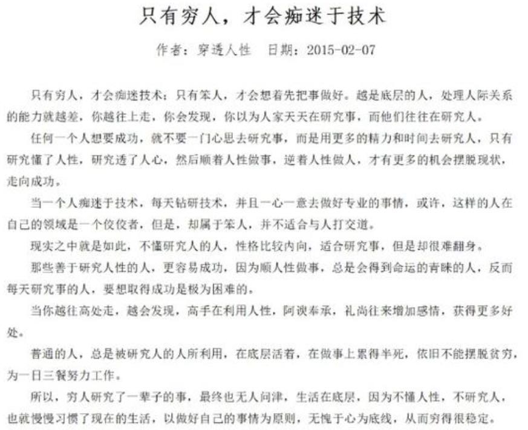
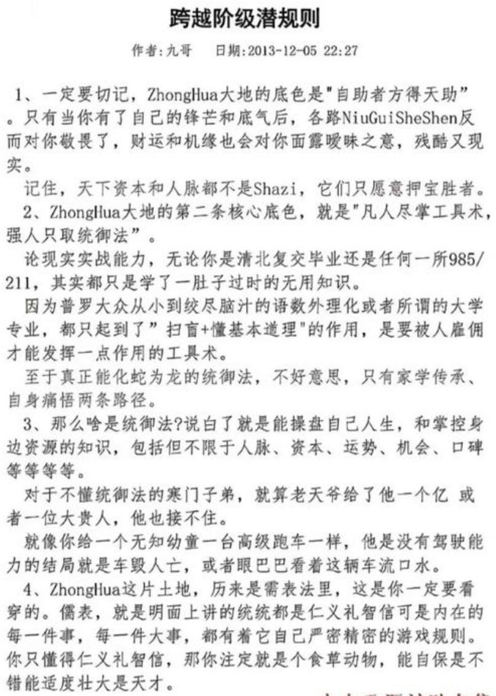
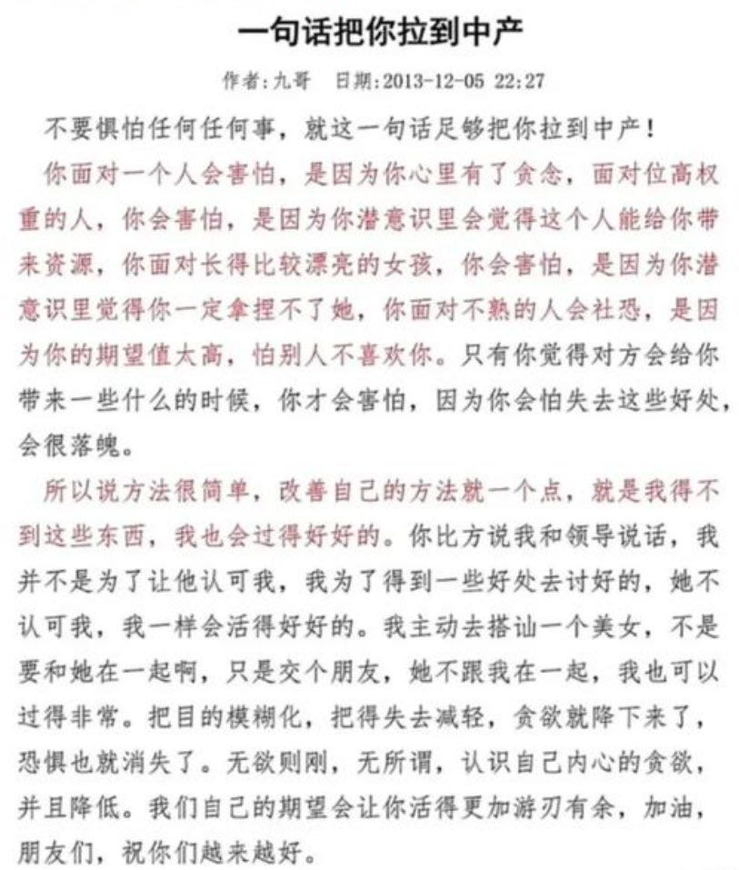
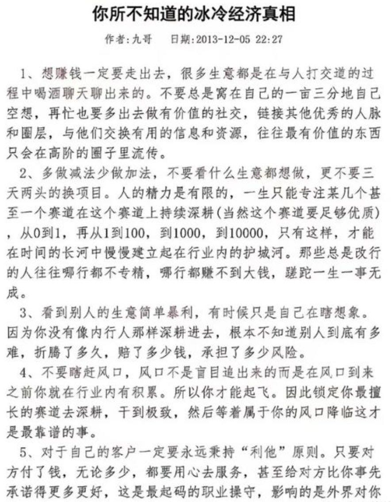

天涯被封几大神贴
Table of Contents
https://x.com/0xUnicorn/status/1829912276243210529
1. 只有穷人才会痴迷技术

我觉得这个帖子的分析也有点意思 https://cloud.tencent.com/developer/news/1069109 ：本质上也是路径依赖，所以到某个点需要跳出来切不可抱残守旧。
[!NOTE]
只有穷人，才会痴迷于技术？这似乎有点出乎意料。但是，如果仔细思考一下，这一说法似乎是有一定的道理。
首先，穷人通常很难获得高质量的教育资源。他们可能没有机会上一流大学学习计算机科学或者工程学科。因此，他们可能只能通过自学来获得技术知识。而现在，互联网上有大量免费的学习资源，比如在线教程、开放式课程等等，这使得自学变得更加容易。
其次，技术给穷人带来了机会和竞争力。在传统产业里，许多工作可能需要一定的资本和资源才能开展。而通过技术，个人可以轻松进入一些新兴领域，比如程序设计、电子商务等，拥有更多的机会和自主性。技术也赋予了这些人知识和技能，使他们在市场上更具竞争力。
但是，让穷人痴迷于技术，也带来了一些风险。比如，一些穷人在技术面前可能会迷失方向，过度依赖技术对于未来的进步和发展。然而，技术只是其中的一部分。当他们过分迷恋技术时，可能会错失一些更加重要的方面，比如人际关系、健康、信念等等。同时，技术的发展也带来了一些副作用，比如信息过载、社交媒体上的虚假信息和各种侵犯隐私问题等等，这些问题对于穷人而言可能更加严重。
总的来说，穷人之所以痴迷于技术，是因为技术提供了一些途径来改善其社会和经济地位。但是，如何正确地理解和使用技术，将技术与生活、信仰等方面进行有机结合，则是一个需要深思熟虑的问题。无论贫穷富贵，一个健康平衡的生活方式才是最重要的。
2. 跨越阶级潜规则
“自助者方得天助”，这个应该是放之四海而皆准吧。的确真正有效用的知识绝对不会写在书本上，只能是在一小波圈子里面传播，直到过时没有办法产生效用才会拿出来。

3. 一句话把你拉到中产

4. 你不知道的冰冷经济真相
